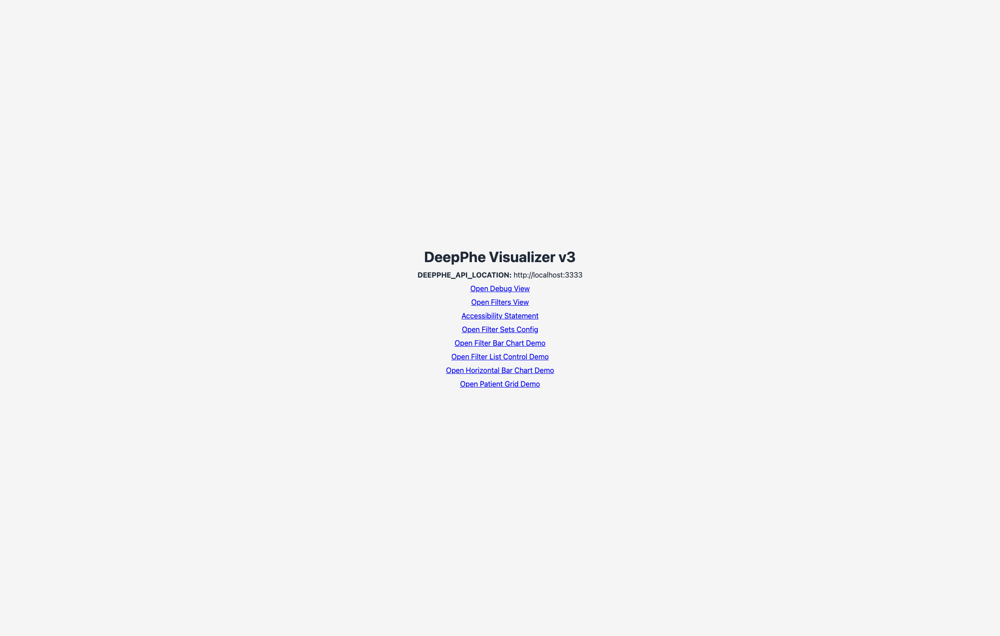
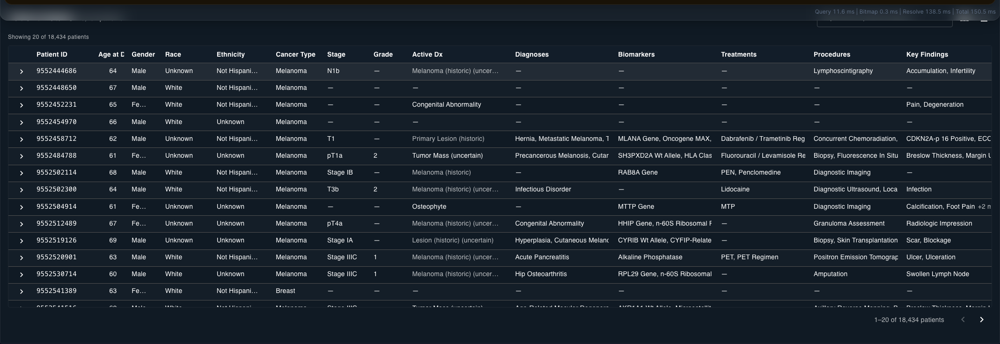
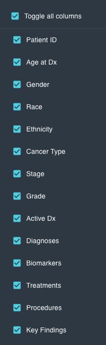
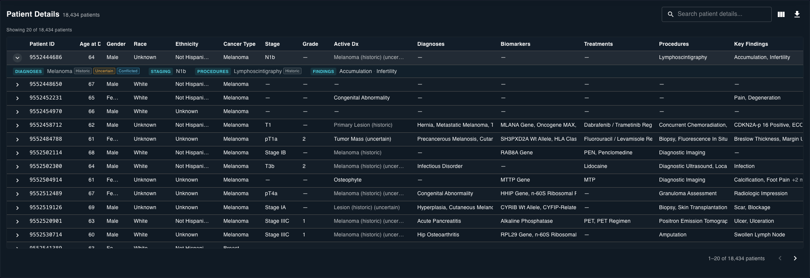
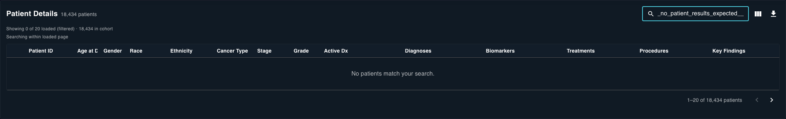
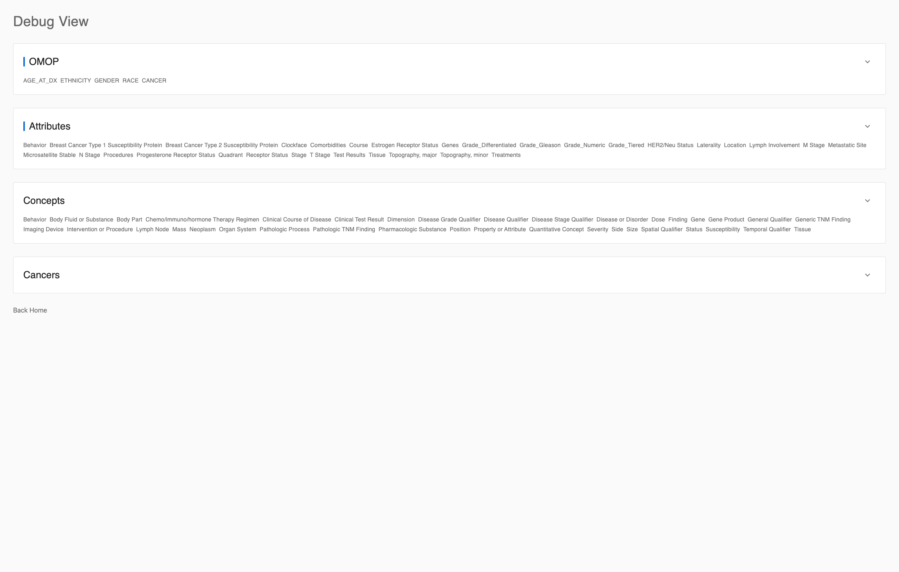
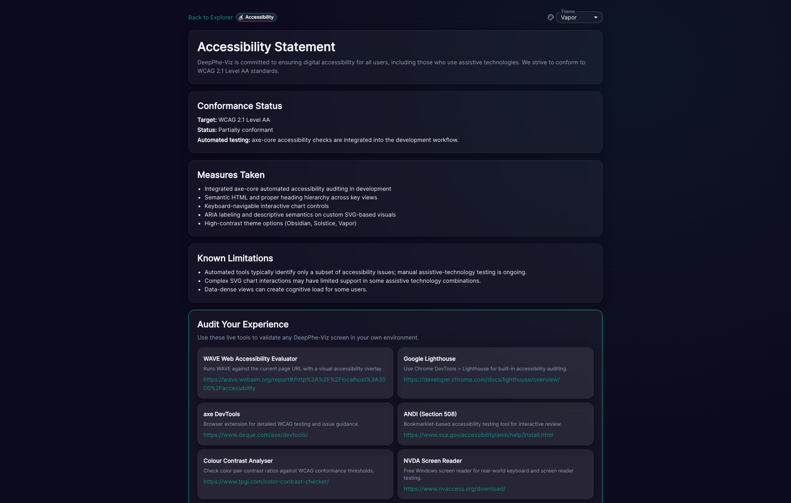

DeepPhe Visualizer v3 UI Review¶
Leadership Summary¶
This review documents the current user-facing state of DeepPhe Visualizer v3 using automated Playwright captures of the live application routes. The primary workflow (/filters) was validated for page framing, filter taxonomy coverage, theme switching, filter selection behavior, patient details controls, and supporting demo/debug/accessibility routes. The result is a reproducible evidence pack designed for release-readiness discussions, stakeholder walkthroughs, and regression baselining.

Figure 01. Home route used as navigation hub for all reviewed views.Primary Workflow Findings (/filters)¶
The Patient Cohort Explorer page presents a clear workflow: a context summary (Identified Patients), global theme controls, and grouped filter cards under Demographics, Cancer Type, and Staging. All required card labels were captured, and at least one filter value was programmatically selected to validate active-state behavior.
 Figure 02. Main explorer framing and top-level workflow layout.
Figure 02. Main explorer framing and top-level workflow layout.
 Figure 21. Confirmed active selection state after scripted filter interaction.
Figure 21. Confirmed active selection state after scripted filter interaction.
Theme accessibility options (Obsidian, Solstice, Vapor) were exercised directly through the Theme control, and card-height toggle automation executed both normalized and fit-content modes during capture.
Patient Details Findings¶
When patient detail data was available, captures validated search, column visibility controls, CSV export action, table header structure, expandable detail rows, and empty-search behavior. If upstream API response shape or cohort data prevented one of these states from rendering, the automation captured fallback UI and logged the missing state for explicit tracking.

Figure 22. Patient details area and operational controls.
Figure 23.Toggle all columns and column-level visibility options.

Figure 24. Expanded-row clinical details view, when data is present.
Figure 25. Confirmed no-match behavior for patient-detail search.Secondary Route Findings¶
Component demos and operational pages (/horizontal-bar-chart-demo, /filter-bar-chart-demo, /filter-list-control-demo, /patient-grid-demo, /debug, /accessibility) were captured to document behavior outside the primary cohort route and to preserve evidence for UI regression checks.

Figure 30. Debug instrumentation surface for data-distribution troubleshooting.
Figure 31. Accessibility statement and audit-tool references.Runtime Availability Notes¶
- All required UI states were captured successfully in this run.
- Card height toggle automation exercised both states: normalized and fit-content.
Conclusion¶
The pipeline now produces repeatable visual QA evidence from live routes and exports a leadership-ready PDF artifact from the MKDocs full-report page. This gives the team a deterministic review workflow for release checkpoints and targeted regression comparison across future UI iterations.